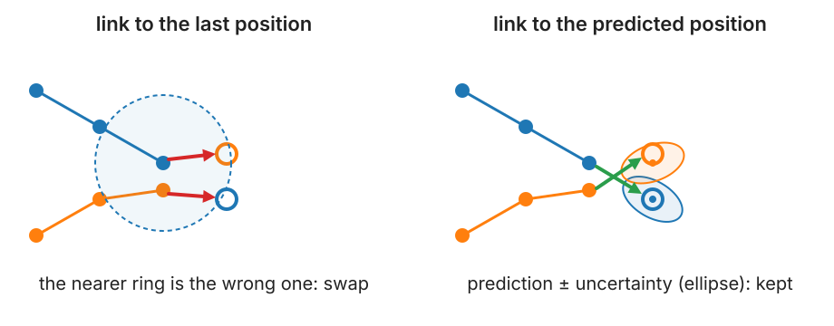
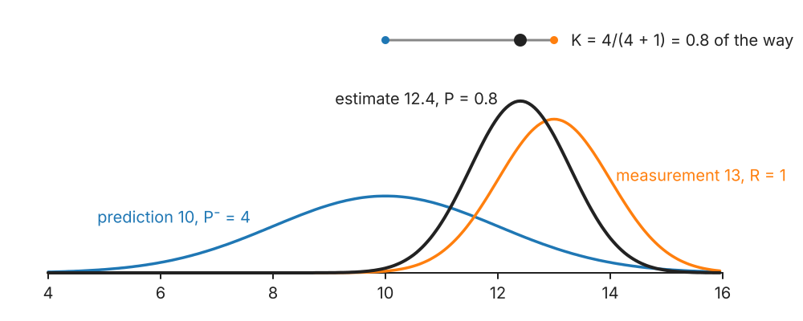

The previous unit linked each detection to the last position of a track. Fast objects are far from where they were, but close to where they are going.
Motion models: random walk and constant velocity.
The Kalman filter in one dimension: predict (the uncertainty grows), update (a weighted average, the gain).
Estimating a velocity that is never measured.
Missed detections: predict again.
Gates from the predicted uncertainty: the Mahalanobis distance.
Tuning: how much to trust the model and the measurements.
Slides titled The math give the formulas and proofs; the ideas are complete without them.
Why predict?

Two particles cross at speed. Linking to the last position, the nearer ring is the wrong one: the identities swap. Linking to where each particle is expected to be, with an uncertainty around it, keeps them apart.
Motion models in words
A motion model says where an object is expected next, and how sure we are.
Random walk (diffusing particles, wandering cells): best guess = the last position. The uncertainty grows with time.
Constant velocity (vesicles on a cable, migrating cells over short times): best guess = last position + velocity × Δt. The velocity itself must be estimated from the track.
Real objects switch: a vesicle waits, then runs along a microtubule. One model at a time is a simplification (last slide).
Uncertainty as a bell curve
An estimate is a position ± a standard deviation: a Gaussian.
In 1D, a bell curve on a line: mean = best guess, variance = how unsure.
In 2D, an ellipse around the best guess: the covariance ellipse of the PCA unit, at 1, 2 or 3 standard deviations.
Two kinds of uncertainty enter tracking:
the detector’s localisation error (R: σ² from the point detection day),
the model’s imperfection (Q: objects do not move exactly as the model says).
The Kalman filter: predict, then update
Two steps per frame (Kalman, 1960):
Predict: move the estimate with the model. Its uncertainty grows: P^- = P + Q.
Update: a measurement z arrives with variance R. The new estimate is a weighted average of prediction and measurement. The weight on the measurement is the gain
K = \frac{P^-}{P^- + R}, \qquad \hat x = \hat x^- + K\,(z - \hat x^-), \qquad P = (1 - K)\,P^-.

Worked: prediction 10 ± 2 (P^- = 4), measurement 13 ± 1 (R = 1): K = 0.8, estimate 12.4, variance 0.8: smaller than both. With a noisy measurement (R = 16): K = 0.2, estimate 10.6.
The math: the product of two Gaussians
Prior (prediction) \mathcal N(x;\,\hat x^-, P^-), likelihood of the measurement \mathcal N(z;\,x, R). By Bayes, the posterior is their product (normalised). The exponent is
So K = P^-/(P^- + R) and P = (1 - K)P^- = P^-R/(P^- + R), smaller than both P^- and R.
Try it: the filter step by step
Velocity without measuring it
In the constant-velocity model the state is (position, velocity). Only the position is measured.
Predict: position + velocity × Δt; both uncertainties grow, and they become correlated (a wrong velocity means a wrong position next frame).
Update: a surprise in position corrects the position and the velocity, through that correlation.
Worked (\Delta t = 1, P = I, process noise 0.1 on the velocity, R = 1): the gain is (2/3,\; 1/3). A measurement 3 units ahead of the prediction moves the position by 2 and the velocity by 1. After a few frames the velocity estimate locks on.
The math: the matrix form
State \mathbf x, model \mathbf x_{t+1} = F\mathbf x_t + \mathbf w, \mathbf w \sim \mathcal N(0, Q); measurement \mathbf z = H\mathbf x + \mathbf v, \mathbf v \sim \mathcal N(0, R).
Update: innovation \mathbf y = \mathbf z - H\hat{\mathbf x}^-, \;S = HP^-H^\top + R, \;K = P^-H^\top S^{-1}, \hat{\mathbf x} = \hat{\mathbf x}^- + K\mathbf y, \;P = (I - KH)P^-.
Constant velocity in 1D: F = \begin{pmatrix}1 & \Delta t\\ 0 & 1\end{pmatrix}, H = (1\;\;0). With P = I, Q = \operatorname{diag}(0, 0.1): P^- = \begin{pmatrix}2 & 1\\ 1 & 1.1\end{pmatrix}, S = 3, K = (2/3, 1/3)^\top, P = \begin{pmatrix}2/3 & 1/3\\ 1/3 & 23/30\end{pmatrix}.
In 2D: two such blocks (x and y), a 4-state filter. With F = H = 1 it reduces to the 1D formulas.
Missed detections: predict again
No detection near the track in this frame (blinking, out of focus, too dim)?
No update: the prediction is the estimate. Predict again for the next frame.
The uncertainty keeps growing: the next measurement may be farther away and still be accepted.
After a few missed frames, give up: the track ends (or waits for gap closing, next unit).
This is how prediction helps to bridge gaps: the allowed region grows exactly as fast as the uncertainty.
Gates from the prediction
Accept a candidate only inside the predicted ellipse, e.g. within 3 standard deviations.
Distance in standard deviations, along the shape of the ellipse: the Mahalanobis distance (Gaussian mixtures treats it in depth).
The gate grows for uncertain tracks (new, or after a miss) and shrinks for well-predicted ones: no single gate radius for all tracks.
The link cost becomes the squared Mahalanobis distance (plus a term for the size of the ellipse, so that vague predictions do not win cheaply).
The math: gates and link costs
With innovation \mathbf y and its covariance S:
d^2 = \mathbf y^\top S^{-1}\mathbf y.
If the model is right, \mathbf y \sim \mathcal N(0, S) and d^2 is χ² with 2 degrees of freedom in 2D: P(d^2 \le g^2) = 1 - e^{-g^2/2}. A 3σ gate (g^2 = 9) keeps 98.9 %; d^2 \le 9.21 keeps 99 %.
Minus log-likelihood of a candidate: \tfrac12 d^2 + \tfrac12\log\det S + \text{const}, so the link cost is d^2 + \log\det S.
Checking the tuning: the average d^2 over many links should be 2 (in 2D). Much larger: Q or R too small; much smaller: too large.
Try it: linking with prediction
Tuning Q and R
R comes from the detector: the localisation error σ² (measured on the point detection day, or from fixed beads).
Q is the model’s honesty: how much the real motion deviates from the model per frame.
Q too small: the filter trusts a wrong model; it lags at turns and its gates miss.
Q too large: the filter follows the noise; no better than the raw positions, and the gates are wide.
Only the ratio Q/R matters for the gain in the long run. Check with the average d^2 (math slide).
The math: the steady state
For the 1D random-walk filter (F = H = 1), the variances settle: P^-_{t+1} = P_t + Q and P_t = P^-_tR/(P^-_t + R). At the fixed point P^-_\infty:
K_\infty = P^-_\infty/(P^-_\infty + R) depends only on Q/R. For Q = R: P^-_\infty = (1 + \sqrt5)/2, K_\infty = (\sqrt5 - 1)/2 \approx 0.618.
With a constant gain, \hat x_t = (1 - K_\infty)\hat x_{t-1} + K_\infty z_t: exponential smoothing of the measurements.
When one model is not enough
Objects switch between waiting, diffusing and running. Run several filters in parallel and weight them by how well each predicts (interacting multiple models), or choose a model per track. The analysis unit classifies motion from the MSD.
Smoothing: once the whole movie is known, run the filter backwards too (a smoother): every position uses past and future measurements, and positions in gaps improve most.
Flow as prediction: in dense tissue, the local velocity field (optical flow) can predict where each cell goes.
Summary
Predict, then link: link to where an object is expected, not where it was.
Motion models: random walk (stay), constant velocity (keep going).
Kalman filter: predict (estimate moves, uncertainty grows by Q), update (weighted average with gain K = P^-/(P^- + R); uncertainty shrinks).
The velocity is estimated from positions alone.
Missed detection: predict again; the gate grows.
Gate = the predicted ellipse (Mahalanobis distance); cost = d^2 + a size term.
Tuning: R from the detector; Q too small lags, too large follows the noise.